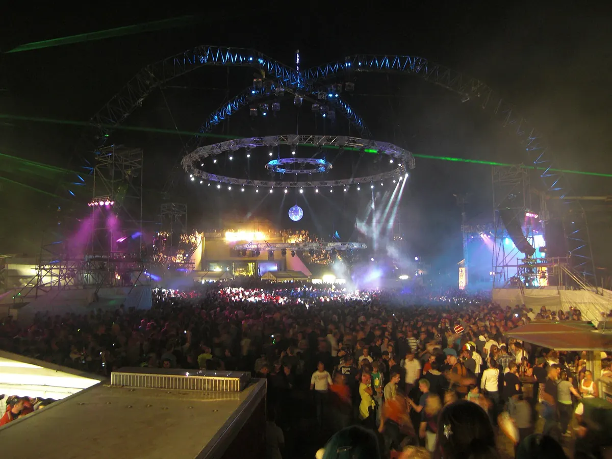
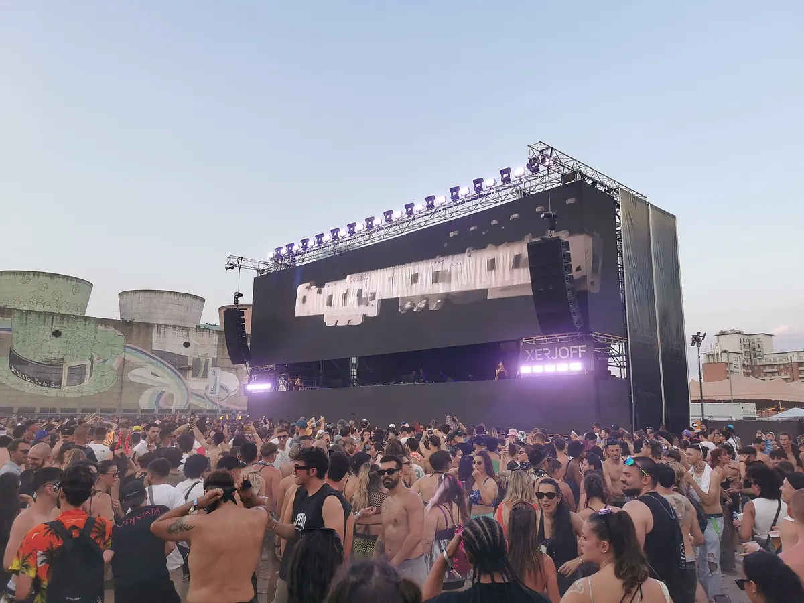
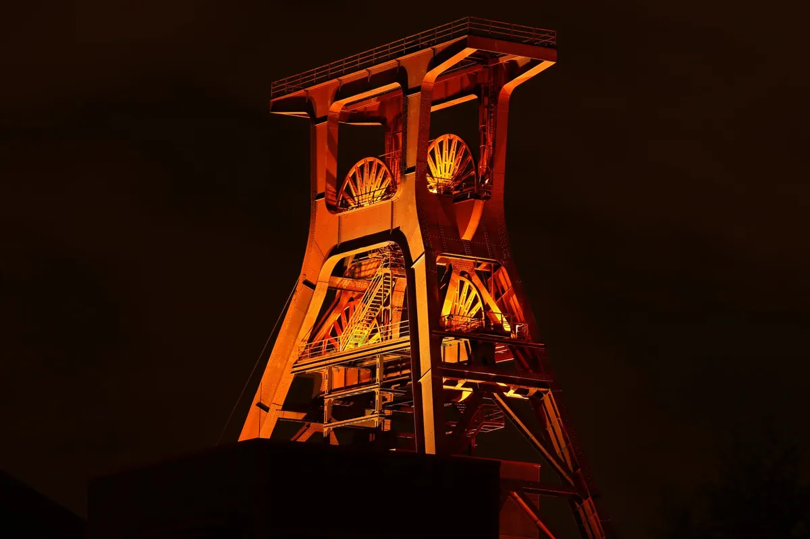
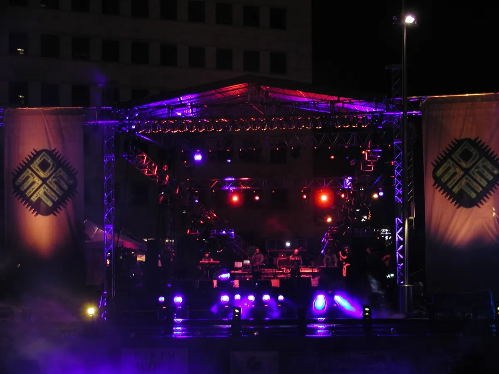
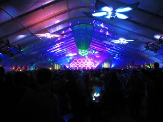

Festival guide, 2027
The best techno festivals in the world in 2027
The main techno festivals compared by sound, scale and setting, from indoor all-nighters in Germany to Detroit, with the 2027 dates that are confirmed and the ones that are not.
A list meant for choosing.
The best techno festivals in the world for 2027 are spread across a calendar that starts in March and runs through the summer. Awakenings in the Netherlands and Time Warp in Germany are the two long-running names most people start with. Movement in Detroit puts techno in the city where it began. Nature One and Kappa FuturFestival are the big open-air weekends, and MAYDAY is the one to pick for hard techno.
How this list was chosen.
A festival is on this list when these three things are true:
- Techno is at or near the centre of the programme.
- It has run recently, and it has either published a 2027 edition or given no sign of stopping.
- It adds something the others lack: a different sound, a different building or a different way of spending the weekend.
DJ Mag's Top 100 Festivals for 2026, a reader poll, is used as a rough guide to profile, and smaller festivals with a strong identity can pass the tests without appearing in it.
A date found only on a listing site is marked as listed, and should be treated as provisional until the festival publishes it.
Techno festival dates for 2027 at a glance.
The 2027 calendar opens in March, and Verknipt, Time Warp and MAYDAY are all indoors. The open-air season peaks in July, when Awakenings and Stone Techno fall on the same weekend, 9 to 11 July, so you have to pick one.
| Festival | Where | 2027 dates | Sound | Scale | Best for |
|---|---|---|---|---|---|
| Verknipt | Amsterdam and Utrecht, Netherlands | 5 March, Ziggo Dome; listed 5 and 6 June, Strijkviertel | Hard techno | Up to 12,000 at the Ziggo Dome | Hard techno in an arena |
| DGTL Amsterdam | Amsterdam, Netherlands | 26 to 28 March | Techno, house | Three days | A spring city weekend |
| Time Warp | Mannheim, Germany | 3 April | Techno, house | 19 hours, five floors | One long indoor run |
| MAYDAY | Dortmund, Germany | 30 April | Hard techno, raw, bounce, acid, classic techno | Four floors | Hard techno |
| Horst | Vilvoorde, Belgium | Not announced (14 to 16 May in 2026) | Techno, house, arts | Three days in 2026 | Design and architecture |
| Movement | Detroit, USA | 29 to 31 May | Techno, house | Six stages | Techno where it began |
| Terminal V | Glasgow, UK | 4 to 6 June | Hard techno | Three days | Hard techno in Scotland |
| Kappa FuturFestival | Turin, Italy | 2 to 4 July | Techno, house | 125,000 attendances in 2026, six stages | Daytime in the open air |
| Awakenings | Hilvarenbeek, Netherlands | 9 to 11 July | Techno | 119,000 visitors in 2026 | A big techno weekend |
| Stone Techno | Essen, Germany | 9 to 11 July | Techno | Three days | An industrial setting |
| Dekmantel | Amsterdam, Netherlands | 29 July to 2 August | Techno, house and beyond | Five days | A wider programme |
| Nature One | Kastellaun, Germany | 29 July to 1 August | Techno and wider electronic | Over 60,000 people, 20 floors | A very big camping weekend |
| Monument | Veggli, Norway | 29 July to 1 August, reported sold out | Deep, hypnotic techno | Four days | A forest and a long trip |
| ARC | Chicago, USA | Not announced (Labor Day weekend) | House, techno | Four days in 2026 | A city park at the end of summer |
| CRSSD | San Diego, USA | Spring not announced | House, techno, electro | Twice a year | A waterfront weekend |
What is the biggest techno festival in the world?
No body counts techno festivals across the world, and festivals count in different ways, so read these as reported figures. Kappa FuturFestival has the largest, with 125,000 attendances over three days in 2026. Awakenings reported 119,000 visitors over three days the same year, and Nature One says more than 60,000 people across four days, with 350 DJs and 20 floors. In DJ Mag's poll, Kappa FuturFestival is eighth and Time Warp is 14th.
Nature One, Germany
Nature One has run since 1995 on the Raketenbasis Pydna, a former missile base at Kastellaun in the Hunsrück. The 2027 edition is on 29 July to 1 August. Its floors range well beyond techno, so it suits people who want a very large camping weekend with techno at its core. It ranks 94th in DJ Mag's list.

Awakenings, Netherlands
Awakenings began in Amsterdam in 1997, and its summer festival is now held at Beekse Bergen in Hilvarenbeek, near Tilburg. The 2026 edition sold out with 119,000 visitors, the largest in its history. The 2027 festival is on 9 to 11 July, and it ranks 34th in DJ Mag's list. Its separate Upclose festival is on 15 and 16 May at Houtrak, near Amsterdam. The Awakenings guide covers the differences between them.
Which are the best techno festivals in Europe?
Of the techno festivals Europe offers, Time Warp, Kappa FuturFestival, Stone Techno and Dekmantel are the best for a city trip, and DGTL, Horst and Monument each offer something different in setting. Europe is where most of this list lives, and for a wider view across every electronic style there is the guide to the best electronic music festivals in Europe.
Time Warp, Germany
Time Warp was established in 1994 and runs for 19 hours on five floors at the Maimarkthalle in Mannheim. The 2027 edition is on 3 April. It is a single indoor night and day, so it fits easily into a weekend. See the Time Warp guide.
Kappa FuturFestival, Italy
Kappa FuturFestival takes over Parco Dora in Turin from noon to midnight, on stages named Solar, Lab, Futur, Voyager, Nova and Kosmo. The 2027 edition is on 2 to 4 July, for ages 18 and over. It finishes at midnight, so you dance in daylight and still have the night in the city.

Stone Techno, Germany
Stone Techno is held at Zollverein in Essen, a former coal mine and coke plant that is now a UNESCO World Heritage site. The 2027 edition is on 9 to 11 July, for ages 18 and over. The site is a large part of the reason to go.

Dekmantel, Netherlands
Dekmantel plays the Amsterdamse Bos, the woodland park on the south edge of Amsterdam, and goes wider than techno. It ranks 17th in DJ Mag's list. The 2027 edition is on 29 July to 2 August, and the Dekmantel guide covers the tickets and the programme.
This is Freddy K on the Radar stage at Dekmantel Ten in August 2024, from the festival's own channel.
DGTL Amsterdam, Netherlands
DGTL was founded in 2013 by Apenkooi Events and is held at NDSM Docklands, a former shipyard area in the north of Amsterdam. The 2027 edition is on 26 to 28 March, which makes it one of the first big dates of the year. It ranks 37th in DJ Mag's list.
Horst, Belgium
Horst describes itself as an arts and music festival, and held its 2026 edition on 14 to 16 May at Asiat Park in Vilvoorde, north of Brussels. Presale for 2027 has opened, but the dates have not been published. It suits anyone who wants design and architecture alongside the music.
Monument, Norway
Monument is a forest festival near Veggli in Numedal, run by the Oslo organisation MNMT, with a deep, hypnotic sound. The 2027 edition is on 29 July to 1 August, for ages 23 and over, and it is reported as sold out. It is the most remote choice here.
Where are the best techno festivals in the USA?
Movement in Detroit leads the techno festivals USA fans can reach, and ARC in Chicago and CRSSD in San Diego are the other two to look at. All three mix techno with house, and the wider picture is in the guide to the best EDM festivals in the US.
Movement, Detroit
Movement began in 2000 as the free Detroit Electronic Music Festival, and Paxahau has produced it since 2006. It uses six stages on Hart Plaza, on the Detroit riverfront, and it books Detroit artists beside visitors. The 2027 edition is on 29 to 31 May, the Memorial Day weekend, and it ranks 35th in DJ Mag's list. See the Movement guide.

ARC, Chicago
ARC is an 18-plus house and techno festival in Union Park, held over Labor Day weekend. The 2027 dates have not been announced. See the ARC guide.
CRSSD, San Diego
CRSSD is a 21-plus festival held twice a year at Waterfront Park in San Diego, and it books house, techno, electro and indie dance. The spring 2027 dates have not been announced.
Which techno festivals go hardest?
MAYDAY in Dortmund is the one built for hard techno, and Verknipt in the Netherlands is the other name to know. Terminal V in Glasgow, on 4 to 6 June 2027, is the third, and it is covered in the UK guide.
MAYDAY, Germany
MAYDAY goes back to December 1991 in Berlin. The 2027 edition is at the Westfalenhallen in Dortmund on 30 April, from 19:00 to 07:00, on four floors of hard techno, raw, bounce, acid and classic techno. It is one long night, and it falls on the eve of the May holiday.
Verknipt, Netherlands
Verknipt plays the Ziggo Dome in Amsterdam on 5 March 2027, and is listed for Strijkviertel in Utrecht on 5 and 6 June 2027.
Not on this list, and why.
These are festivals people ask about that fall outside the tests above.
- Tomorrowland. It has techno stages and ranks first in DJ Mag's list, but the festival as a whole is far broader.
- Creamfields. It has a large techno following, and it is a wide dance festival. It sits in the UK guide with Junction 2 and Houghton.
- Ultra. Its Resistance stages book techno, but Ultra is a big-stage EDM festival first.
How to choose.
Look at the calendar. Awakenings and Stone Techno clash on 9 to 11 July, and Dekmantel, Nature One and Monument all start on 29 July. Time Warp, Movement and Kappa FuturFestival can all fit into one year.
Techno festivals FAQ.
What are the best techno festivals in the world?
Awakenings in the Netherlands, Time Warp in Germany, Movement in Detroit, Kappa FuturFestival in Italy and Nature One in Germany are the strongest names for 2027. Dekmantel, Stone Techno and DGTL follow for a smaller city weekend.
What are the best hard techno festivals?
MAYDAY in Dortmund is built for hard techno, and its 2027 edition is on 30 April at the Westfalenhallen. Verknipt in the Netherlands and Terminal V in Glasgow are the other two names to know.
What is the best techno festival?
Awakenings is the pick for a big techno weekend, Time Warp for the long indoor night and Movement for Detroit history. Kappa FuturFestival is the daytime choice, and MAYDAY is the one for hard techno.
Sources.
- 2027 dates from each festival's own site: Awakenings, Time Warp, Movement, Kappa FuturFestival, Nature One, MAYDAY, DGTL, Stone Techno, Dekmantel, Monument.
- Horst: the festival's site.
- Attendance: L'Espresso on Kappa FuturFestival, ANP via nieuws.nl on Awakenings, and Nature One's own site.
- Verknipt: FestivalInfo on the Ziggo Dome and Technoairlines on Utrecht.
- Monument's sell-out and age limit: Technoairlines.
- Terminal V: Time Out.
- Poll ranks: DJ Mag: Top 100 Festivals 2026.
- Awakenings, Time Warp, Movement, Dekmantel and ARC: this site's guide to each festival, linked above, which cites its own sources.
Continue reading
Read next.
 Festivals~14 min read
Festivals~14 min readBest Electronic Music Festivals in Europe 2027, Compared
Fourteen major festivals and seven smaller ones, from Tomorrowland to Garbicz, compared by sound, scale, setting and 2027 dates.
Read article →
Festivals~10 min readBest EDM Festivals in the US 2027: EDC, Ultra, Movement
EDC Dusk and Dawn on 14–16 and 21–23 May, Ultra on 26–28 March, Movement on 29–31 May: US EDM festivals for 2027 by sound, with dates confirmed or not.
Read article → Festivals~6 min read
Festivals~6 min readAwakenings Festival: What It Is and Where It Happens
Founded in Amsterdam in 1997, techno-only ever since: where Awakenings' summer festival and its Amsterdam Dance Event special happen, and why it's called Awakenings.
Read article → Festivals~7 min read
Festivals~7 min readSziget Festival 2027: Dates, Music, Camping and Travel
Five days on Óbuda Island, with pop, rock and hip-hop beside club stages, theatre, circus and a rail link into Budapest.
Read article →Want something to play while you read? Let the Selector pick a DJ set.